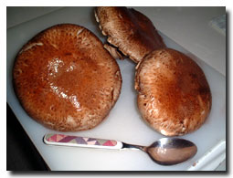
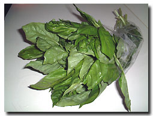
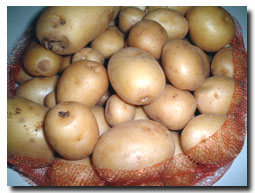

| ..*..*.. 2004年1月22日(木) 曇り ..*..*..  こんな大きなマッシュルーム、「ポータベラマッシュルーム」と言います。1年くらい前にマッシュルームのサンドイッチを食べたときに、その存在を知り、気をつけてみて見るとあちこちで売っていました。 左の写真、下に置いたスプーンと比べてみてください。大きいものは直径15センチくらいあります。 1パウンドで2ドル99セントくらい(だいたい2個で350園くらいかな)。 うちでは、オーブンで10分くらい焼いて、コショウとお醤油で食べます。ナイフとフォークを使うと食べやすくて、とてもおいしいです。  バジルは1年中売っています。 右の写真は1束、99セント(100円強)です。冬場は、もう少し量が少なくて値段がちょっと高くなりますが、基本的にはこんなもんです。 バジルは、1回のお料理には、多くてひと枝、普通は葉っぱ2、3枚でいい上に、1週間もすると黒っぽくなってくるため、使い切れなくて、最初のうちはダメにしてしまうことも多かったのですが、バジルペーストを作ったり、みじん切りの冷凍にして無駄なく使い切れるようになりました。(葉っぱのまま冷凍にするより、みじん切りの方が使いやすい) でも、もうちょっと少なくて安いといいのですけどね。  このポテトは、なんだかおいしそうで買いました。1パック2ドル99セント(350円強)。皮が薄くておいしかったな。 写真は全部、10月頃に撮りました。たまにはこういうのも面白いかな、と思って載せてみました。 |